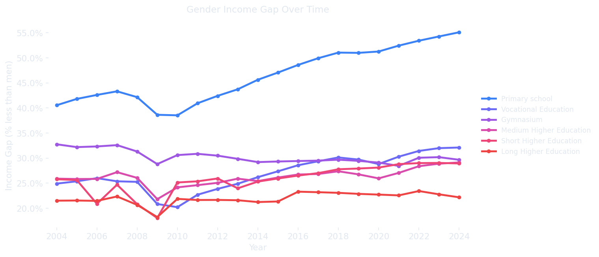
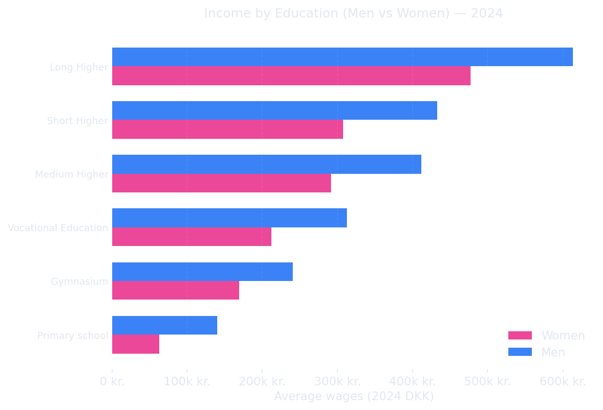

Denmark's Equality Paradox
Equal on paper. Equal in practice? Two decades of data reveal what Denmark's gender equality rankings aren't telling you.
Total Individuals Tracked
Highest Income Region
Largest Gap Demographic
Denmark sits near the top of almost every international ranking of gender equality. It scores 71.8 out of 100 on the European Institute for Gender Equality's index [3], and foreign articles often describe it as a country where women work, men share childcare, and the pay gap has been solved.
The numbers tell a different story.
In 2024, Danish women earned on average 12.9% less than men [2], and Denmark has not been in the top 10 of the Evolution of Global Gender Gap Index since 2014 [4]. And this is happening in a country where young women are now clearly more educated than young men, 59% of women aged 25–34 hold a higher-education degree, compared to just 44% of men [5].
If Danish women are more educated than men, why do they still earn less and does this look the same everywhere in Denmark?
Denmark is small, but it is not uniform. Average wages in a parish north of Copenhagen can be more than 400,000 DKK higher than in a rural parish in Lolland or western Jutland [8]. Equality, it turns out, has a postcode.
Using two decades of official data from Statistics Denmark (2004–2024) [1], covering every municipality, every education level, and both genders, we aim to answer three questions:
- Does education pay off equally for men and women in different parts of Denmark?
- What role does education level play in driving economic equality (or inequality) across regions?
- Are women actually overtaking men, in both education and income, or only in one of them?
We have built this story as a martini glass [9]. First, we walk you through the national picture the big trends that shape the debate. Then the site opens up and hands the controls over to you: pick a municipality, pick an education level, pick a year, and see what the data says about your corner of Denmark.
The Gender Pay Gap Over Time
The chart below tracks women's income relative to men's across all education levels from 2004 to 2024. If the gap were closing, you would expect the lines to converge toward zero over time. What you see instead is a persistent and in some cases widening the divide.

The gender pay gap measured annually across all education levels. A value of 12% means women in that group earned 12% less than their male counterparts in the same year.
The gap has not disappeared, instead it has merely shifted shape. At every education level, women consistently earn less than men. Notably, the gap is largest among those with long higher education degrees, reaching 28.4% at its peak. This is the education group where one might expect parity to be strongest, since both men and women have invested heavily in credentials.
The data covers twenty years of economic change, including the 2008 financial crisis and the post-2015 recovery. Despite these shifts, the gap across education groups remains remarkably stable suggesting structural forces rather than temporary circumstances are at work.
The Education Payoff
More education generally means higher wages but not equally for everyone. The chart below compares average wages for men and women at each education level. It asks a simple question: do men and women get the same financial return on the same educational investment?

Each bar pair shows the average annual income for men and women at each education level. The vertical gap between the two bars is the raw income difference and not a percentage, but actual dkk.
The bars tell a clear story: at every education level, men out-earn women. The absolute gap (measured in dkk) grows as education level increases. Someone with a basic education sees a smaller raw gap than someone with a long higher education degree. In other words, the more you educate yourself, the larger the absolute pay gap becomes if you are a woman.
This is the core of the paradox. Denmark's women have outpaced men in university enrollment and completion. Yet the labour market rewards those credentials less when they belong to a woman. The education premium exists, but it just applies unevenly.
Equality Has a Postcode
National averages hide enormous regional variation. The map below shows the income gap for workers with long higher education degrees broken down by municipality. Some parts of Denmark look very different from others.

The gender pay gap among workers with long higher education degrees, shown for municipalities with the largest populations in that education group. Values show women's earnings as a percentage below men's.
The regional picture reveals that geography shapes the gap significantly. Gentofte, Denmark's highest average income municipality, also shows one of the largest proportional gaps between men and women in the highly educated bracket. Meanwhile, rural municipalities show different patterns entirely, often because the population with long higher education degrees is small enough that individual employers or sectors dominate the local average.
This matters for policy. A national level equality initiative that treats Denmark as uniform will misfire in many places. The gap in Gentofte is not the same problem as the gap in Lolland even if both show women earning less than men with the same qualifications.
The martini glass now opens here. The three charts above give you the national picture. Explore the full dataset by municipality, education level, and year in the interactive dashboard below.
References
- https://www.statistikbanken.dk/INDKP107
- https://www.dst.dk/en/Statistik/temaer/ligestilling
- https://eige.europa.eu/gender-equality-index/2025/DK
- https://reports.weforum.org/docs/WEF_GGGR_2025.pdf
- https://op.europa.eu/webpub/eac/education-and-training-monitor/en/country-reports/denmark.html
- https://www.sciencedirect.com/science/article/pii/S0927537118301234?via%3Dihub
- https://nordregio.org/maps/income-and-inequality-typology-2017/
- https://geolocet.com/blogs/news/income-distribution-across-danish-parishes
- Segel, E., & Heer, J. (2010). Narrative visualization: Telling stories with data. IEEE Transactions on Visualization and Computer Graphics, 16(6), 1139–1148.